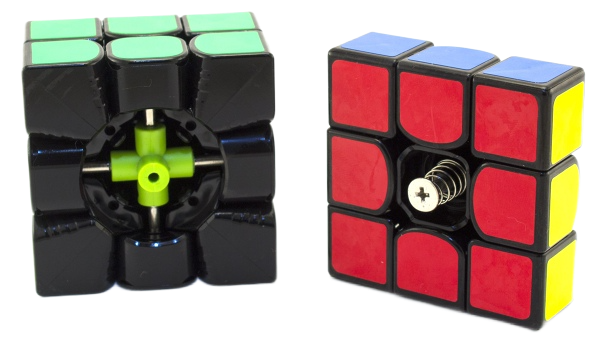

1.Кубик Рубика - сложная головоломка, которую можно собрать только по специальным формулам.
2.Классический кубик Рубика 3x3 имеет
43.252.003.274.489.856.000
возможных состояний.
3.Кубик Рубика - лидер среди игрушек по общему количеству продаж.
Механизм
Из центральных и рёберных элементов с внутренней стороны вырезан фрагмент таким образом,
что получается полость в виде объединения трёх цилиндров.
Помимо этого, на рёберных и угловых элементах имеются выступы особой формы. Эти выступы образуют
фрагмент цилиндра, плотно входящий в полость.
Благодаря такой конструкции грани кубика свободно вращаются.
В центре конструкции вместо «невидимого кубика» находится трёхмерная крестовина,
на которой свободно вращаются центральные элементы. Все остальные элементы держатся друг за друга,
входя выступами в вышеуказанную выемку.

Спидкубинг
Спидкубинг — хобби для настоящих интеллектуалов
В 2018 году кубик Рубика вновь на волне популярности. Становится всё больше молодых людей,
увлекающихся скоростной сборкой головоломки — спидкубингом (speedcubing).
.png)